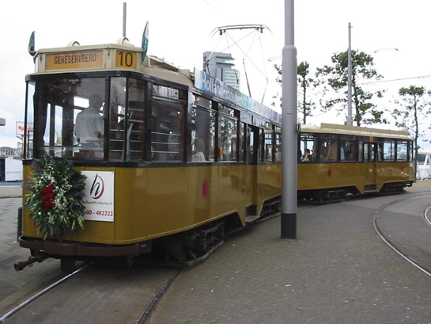

Rijseizoen tramlijn 10 feestelijk geopend!
- donderdag 11 december 2008 22:12
- Geschreven door Joachim
Het rijseizoen van tramlijn 10 is weer begonnen. Gistermiddag werd het startsein gegeven met een feestelijke rit, waarbij de RET-directie, leden van de gemeenteraad en het bestuur van Stichting RomeO aanwezig waren. Met vierasser 515 en een daarbij behorende aanhangwagen werd een rit door het centrum van Rotterdam gemaakt. Ook retmetro.nl was uitgenodigd en woonde de feestelijke rit bij.

Vierasser 515 op het eindpunt van lijn 5, het nieuwe startpunt voor lijn 10...
Lijn 10
Ook in 2004 kan jij nog gebruik maken van trams uit 1930. Het straatbeeld uit die tijd herleefd. Met de tram rij je door het bruisende centrum van Rotterdam en de historische stadsdelen. Een rondrit met de tram duurt 75 minuten. Niet alleen voor de toerist een leuke rit, ook voor (oud)Rotterdammers is het de moeite waard.
Ander beginpunt
In verband met werkzaamheden op het Centraal Station was het voor lijn 10 niet meer mogelijk het Centraal Station als beginpunt te hebben. Dit omdat er nagenoeg geen ruimte was. Er is daarom gekozen voor een nieuw beginpunt, namelijk het Willemsplein(eindpunt van lijn 5). De tramdienst is zodanig afgesteld dat men kan overstappen op de nabijgelegen Spido of andersom.
Dienstregeling
Tramlijn 10 rijdt op alle dagen van de week, behalve op maandag en vrijdag. Het rijseizoen loopt van 3 juli t/m 5 september 2004. Op 31 juli(Zomercarnaval) en op 14 augustus(Dance Parade), kan lijn 10 door omstandigheden niet rijden. Op de historische tram kan je een kaartje kopen bij de conducteur, daarbij wordt nog extra informatie verschaft. Het toegangskaartje is tevens de hele dag geldig op alle RET-lijnen(metro, tram, bus).
|
Vertrektijden lijn 10
|
|
|
vanaf Willemsplein
|
vanaf Centraal Station
|
| 10.15 | 10.25 |
| 11.00 | 11.10 |
| 11.45 | 11.55 |
| 12.30 | 12.40 |
| 13.15 | 13.25 |
| 14.00 | 14.10 |
| 14.45 | 14.55 |
| 15.30 | 15.40 |
Stichting RomeO
De trams die rijden op tramlijn 10 vallen onder het beheer van Stichting RomeO. Met de hulp van vrijwilligers en donateurs zorgt deze stichting ervoor de Rotterdamse trams uit het verleden rijvaardig te houden. Niet alleen trams, maar ook historische bussen vallen hieronder. Stichting Romeo zoekt nog vrijwilligers! Als vrijwilliger kan je rekenen op zinvol werk in een gezellige sfeer. Je helpt mee de historie van het openbaar vervoer levend te houden.
Wat kan ík doen? Een greep uit de functies: lasser, houtbewerker, schilder, conducteur, bankwerker, poetser, redacteurs, webmaster en voorlichter. Enthousiast geworden? Mail dan naar Dit e-mailadres wordt beveiligd tegen spambots. JavaScript dient ingeschakeld te zijn om het te bekijken. .
Meer informatie
Kijk op www.stichtingromeo.nl of op www.lijn10.nl en maak daar je keuze. Retmetro.nl wenst je een prettige reis met tramlijn 10!